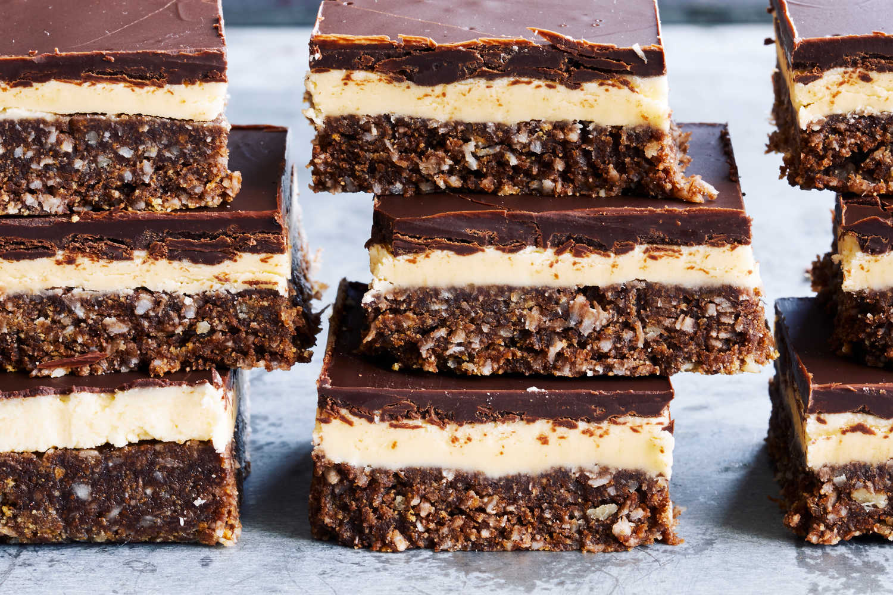

Home
Nanaimo protein bars

I chose this recipe because I love how delicious they taste, as well as the fact that they are relatively healthy.
I love how easy they are to make, take, and eat.
-My younger brother
Tips and Substitutions
- You can substitue almond butter for the cashew butter, or do a 50/50 mix, it may work with any nut butter but I have only tried these two.
- You can also switch out the maple syrup for honey, but in my experience using a little bit less honey works better.
Recipe
|
Prep time: Ten minutes(plus refrigerate for two hours)
|
|
Servings: Makes about sixteen Nanaimo bars
|
Ingredients
For the base layer:
- 1 cup creamy cashew butter, can be swapped out for almond butter
- 1/2 cup maple syrup or honey
- 1 cup coconut flour
- 1 tsp vanilla extract
- 1/4 cup coconut oil, melted
For the chocolate coating:
- 3/4 cup dark chocolate chips
- 1 Tbsp coconut oil
|
Directions
For base layer
- Line a 8x8" pan with parchment and spray lightly with coconut oil; set aside.
- In a food processor, add the cashew butter,
maple syrup, coconut flour coconut oil and vanilla extract.
- Pulse until you have a dough-like mixture.
- Press evenly into the prepared pan.
For chocolate coating
- In a small bowl, add the chocolate chips and
coconut oil.
- Microwave for about 1 minute stirring halfway until
the chocolate is melted and smooth, you can melt on the stove
if you prefer.
- Pour the chocolate over the base layer and
spread to cover the top.
- Refrigerate for at least two hours.
- Before serving, remove from the fridge and cut
into about 16 bars.
|